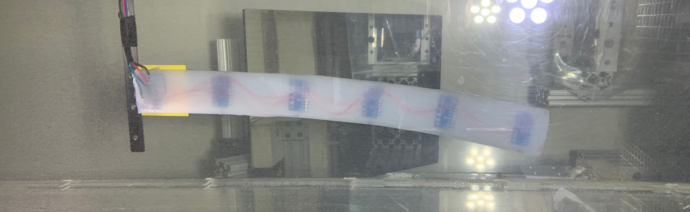
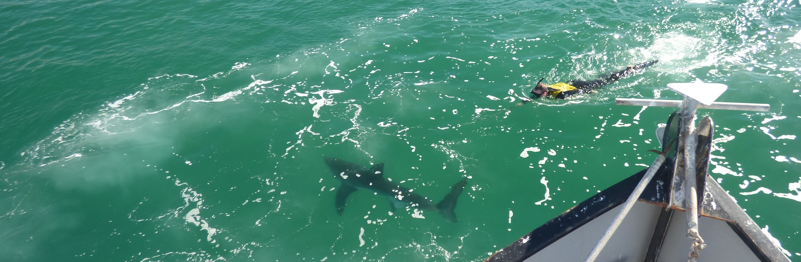
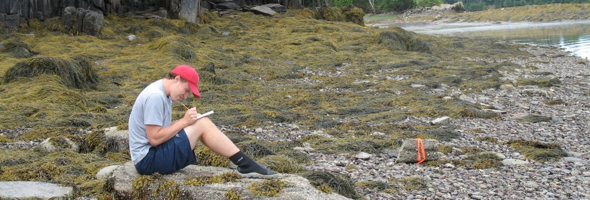

Report

I started my PhD in the fall of 2019 at Harvard University in the Department of Organismic and Evolutionary Biology. I am a member of Dr. George Lauders Biomechanics and Hydrodynamics lab. I am broadly interested in fish behavior and I would like to begin to understand the kinematics of fishes in their natural environment. I am currently building a multiaccelerometer datalogger allowing for who body kimatics from fish in the wild.

I graduated from California State University Long Beach with a MS in Biology in 2016. I was a member of Dr. Chris Lowes shark lab. I went to the Shark Lab in order to help develop autonomous underwater vehicles for shark tracking. I worked with engineers and computer scientists at Harvey Mudd College to implement multi vehicle autonomous tracking of leopard sharks. My thesis originally was going to use these AUVs to track leopard sharks with accelerometer data loggers on them, providing very fine scale spatio-temporal data, which I would then pair with fine scale environmental data I was collecting. However,the El Nino in 2015 changed this trajectory as leopard sharks were increasing rare. During my time at CSULB I managed the Southern California Juvenile White Shark tagging program. This allowed me to pivot and instead write my masters thesis on the habitat selection of juvenile white sharks. During my time at CSULB I work on and numerous other studies, with a large focus on using active and passive acoustic transmitters to track the movement of marine fishes.

I graduated from the College of William and Mary with a BS in Biology in 2011. During my undergrad I was a member of Dr. Jon Allens invertebrate life history ecology lab. As part of Jons lab I spent a summer in Maine studying the egg clustering behavior of an intertidal gastropod and the subsequent fall working at the Virginia Institute of Marine Sciences field station at Wachapreague Island Studying crab-snail-oyster cascades. Both of these studies became my undergraduate masters thesis.